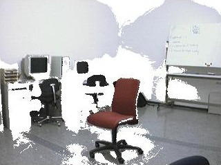
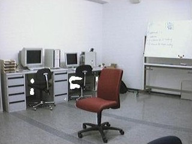
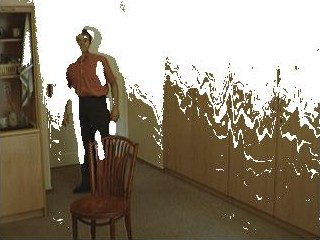
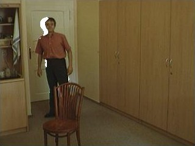

Motion Detection Using Simple Image Filtering
Abstract
The project uses the simple filter to implement motion detection in image sequence on Matlab. We calculate the intensity value variation of the same point in image sequence and set a threshold. The value bigger than the threshold indicates it is a pixel where motion happens, and we binarize the image and mark as the motion.
Algorithm Design
- Image Preprocessing:
we apply 2-D Gaussian filter to reduce the spatial noise. - Intensity Value Variation Calculation:
we apply 1-D temporal Gaussian filter, then take the temporal derivatives of each pixel. - Self-adaptive threshold algorithm:
For each image, we have calculated a self-adaptive threshold. We model the background pixels which change little as Gaussian zero mean noise and use EST_NOISE_TruccoVerri Algorithm to estimate the standard deviation σ. Then we take the average value of each matrix plus n*σ and ceil the sum as the threshold.
Analysis
A large intensity variation usually incidates a motion in this method. However, the luminance variation can also be marked as motion. The self-adaptive threshold algorithm can solve the problem perfectly.


There is a sudden luminance increase in the image sequence, the traditional static threshold(left view) will misjudge it as a motion.


Likewise, the man in the graph turns on the light, which incurs a large global intensity value variation. It proves that the threshold algorithms work well.
Challenge
When the objects move too too fast. We cannot detect the motion.
If the luminance varies too too largely, we will still misjudge.